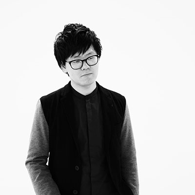
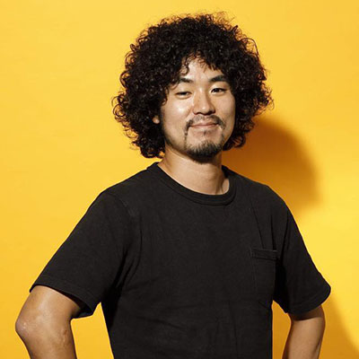
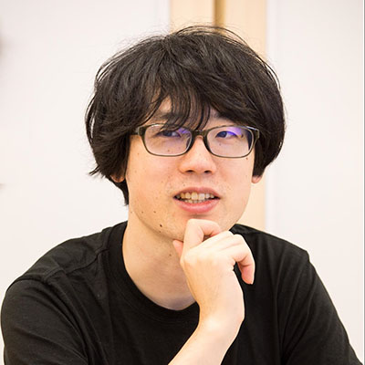

大手コンテンツプロデューサーから見たXRへの期待と展望
講演情報
| 資料公開予定 | 公開予定 |
|---|---|
| スクリーンショット撮影可否 | 可 |
| SNS投稿可否 | 可 |
講演概要
年々拡大するXR市場ですが、一般的にエンターテイメント領域ではサブカルチャーの一種である、と捉えられているのは事実です。高度に成長する技術と実現される新たな体験。
XRがメインストリームのカルチャーへ飛翔するために重要な「コンテンツプロデュース」という観点から、XRへの期待と展望について議論します。
講演者詳細
-

先端技術を活かした、アートインスタレーションや、空間演出、企業のR&Dを主に手掛ける。 オーディオ・ビジュアル作品、大規模なメディアコントロールシステムを含んだオフィス、商業施設の設計など多岐に渡る活動を行っている。 文化庁が主催する、「空港等におけるメディア芸術日本文化発信事業」での「Stillness」では、英国Lumen Prize 2020 Shortlist にノミネート 作家としては、クリエイティブレーベルnorにも参画し、テクノロジー×アートをテーマにした作品を展開 NTT運営の美術館「ICC」や、六本木アートナイトなどをはじめ、国内外でのアートフェスティバル、ミュージアムでの展示を行っている。「dyebirth」は2020年第22回文化庁メディア芸術祭アート部門、審査委員会推薦作品に選出 著書に「Visual Thinking with TouchDesigner」がある。
-

慶應義塾大学卒、2009年DeNA新卒入社。入社後はモバイルオークションのサイト運営、広告営業の経験を経て、2010年にゲーム事業に異動。複数本の新規ゲームの立ち上げを経てゲーム開発の部長職を経験後、職能組織長として部署の立ち上げとマネジメントに尽力。その後、2017年より専門役員として協業案件にて新規ゲームの開発、運営に従事。2019年4月からゲーム事業部長として国内ゲーム事業を統括して2020年10月より現職。
-

VRジャーナリスト。VRが人の知覚する現実を認識を進化させ、社会を変えていく無限の可能性を感じ、身も心も捧げている。VR/AR業界の情報集約、コンサルティングが専門。